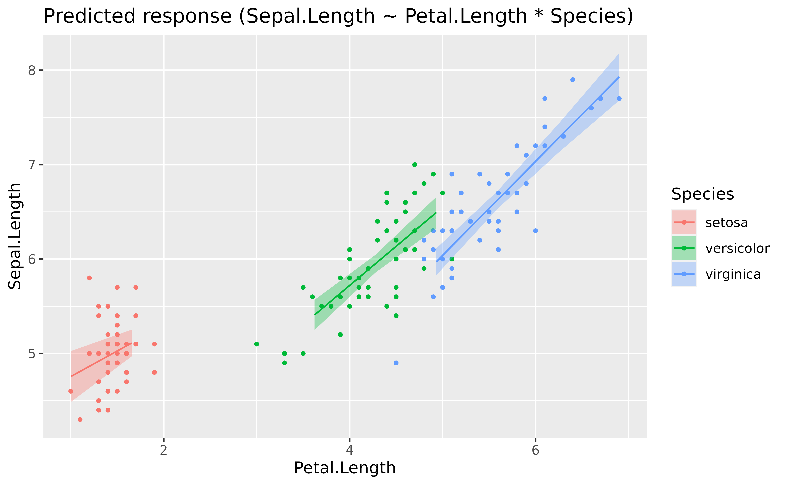
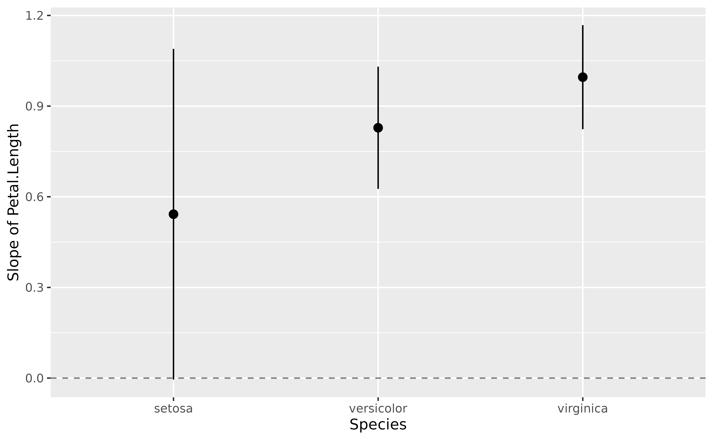
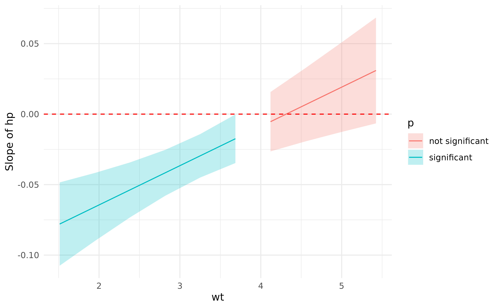
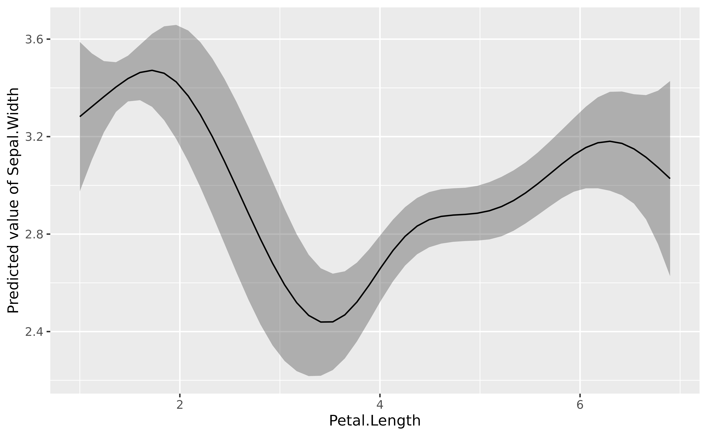
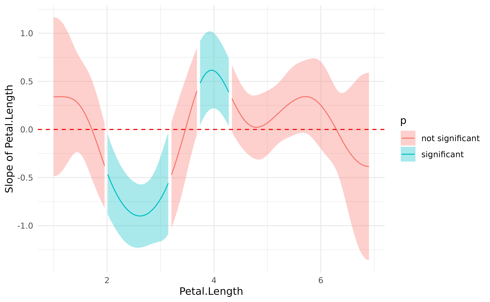

This vignette will present how to estimate marginal effects and
derivatives using estimate_slopes().
Marginal means vs. Marginal effects. Marginal slopes are to numeric predictors what marginal means are to categorical predictors, in the sense that they can eventually be “averaged over” other predictors of the model. The key difference is that, while marginal means return averages of the outcome variable, which allows you to say for instance “the average reaction time in the C1 condition is 1366 ms”, marginal effects return averages of coefficients. This allows you to say, for instance, “the average effect of x in the C1 condition is 0.33”. When you visualize marginal effects, the y-axis is the effect/slope/beta of a given numeric predictor.
Let’s see some examples.
Marginal effects over a factor’s levels
Let’s fit a linear model with a factor interacting with a continuous predictor and visualize it.
library(ggplot2)
library(parameters)
library(performance)
library(modelbased)
model <- lm(Sepal.Length ~ Petal.Length * Species, data = iris)
estimate_relation(model) |>
plot()
It seems like the slope of the effect is roughly similar (in the same direction) across the different factor levels.
parameters(model)> Parameter | Coefficient | SE | 95% CI
> -------------------------------------------------------------------------
> (Intercept) | 4.21 | 0.41 | [ 3.41, 5.02]
> Petal Length | 0.54 | 0.28 | [ 0.00, 1.09]
> Species [versicolor] | -1.81 | 0.60 | [-2.99, -0.62]
> Species [virginica] | -3.15 | 0.63 | [-4.41, -1.90]
> Petal Length × Species [versicolor] | 0.29 | 0.30 | [-0.30, 0.87]
> Petal Length × Species [virginica] | 0.45 | 0.29 | [-0.12, 1.03]
>
> Parameter | t(144) | p
> -----------------------------------------------------
> (Intercept) | 10.34 | < .001
> Petal Length | 1.96 | 0.052
> Species [versicolor] | -3.02 | 0.003
> Species [virginica] | -4.97 | < .001
> Petal Length × Species [versicolor] | 0.97 | 0.334
> Petal Length × Species [virginica] | 1.56 | 0.120Moreover, the interaction is not significant. However, we see below that removing the interaction does not substantially improve the model’s performance. So, for the sake of the demonstration, let’s say we want to keep the maximal effect structure.
model2 <- lm(Sepal.Length ~ Petal.Length + Species, data = iris)
test_performance(model, model2)> Name | Model | BF | df | df_diff | Chi2 | p
> ----------------------------------------------------
> model | lm | | 7 | | |
> model2 | lm | 26.52 | 5 | -2 | 3.47 | 0.177
> Models were detected as nested (in terms of fixed parameters) and are compared in sequential order.Although we are satisfied with our model and its performance, imagine
we are not interested in the effect of Petal.Length for
different Species, but rather, in its general trend
“across” all different species. We need to compute the marginal
effect of the predictor, which corresponds to its slope
averaged (it’s a bit more complex than a simple averaging but
that’s the idea) over the different factor levels.
slopes <- estimate_slopes(model, trend = "Petal.Length")
slopes> Estimated Marginal Effects
>
> Slope | SE | 95% CI | t(144) | p
> ---------------------------------------------
> 0.79 | 0.10 | [0.59, 0.99] | 7.69 | < .001
>
> Marginal effects estimated for Petal.Length
> Type of slope was dY/dXWe can see that the effect of Petal.Length,
marginalized over Species, is positive and
significant.
Effects for each factor’s levels
slopes <- estimate_slopes(model, trend = "Petal.Length", by = "Species")
slopes> Estimated Marginal Effects
>
> Species | Slope | SE | 95% CI | t(144) | p
> -----------------------------------------------------------
> setosa | 0.54 | 0.28 | [ 0.00, 1.09] | 1.96 | 0.052
> versicolor | 0.83 | 0.10 | [ 0.63, 1.03] | 8.10 | < .001
> virginica | 1.00 | 0.09 | [ 0.82, 1.17] | 11.43 | < .001
>
> Marginal effects estimated for Petal.Length
> Type of slope was dY/dX
plot(slopes)
Interactions between two continuous variables
Interactions between two continuous variables are often not straightforward to visualize and interpret. Thanks to the model-based approach, one can represent the effect of one of the variables as a function of the other variable.
Such plot, also referred to as Johnson-Neyman intervals, shows how the effect (the “slope”) of one variable varies depending on another variable. It is useful in the case of complex interactions between continuous variables. See also this vignette for further details.
For instance, the plot below shows that the effect of hp
(the y-axis) is significantly negative only when wt is low
(< ~4).
model <- lm(mpg ~ hp * wt, data = mtcars)
slopes <- estimate_slopes(model, trend = "hp", by = "wt")
plot(slopes) +
geom_hline(yintercept = 0, linetype = "dashed", color = "red") +
theme_minimal()
Describing and reporting non-linear relationships (e.g., in GAMs)
Complex problems require modern solutions.
General Additive Models (GAMs) are a powerful class of models that extend the capabilities of traditional GLMs. In particular, they are able to parsimoniously model possibly non-linear relationship.
Let’s take for instance the following model:
# Fit a non-linear General Additive Model (GAM)
model <- mgcv::gam(Sepal.Width ~ s(Petal.Length), data = iris)
estimate_relation(model, length = 50) |>
plot()
The GAMs nicely models the complex relationship between the two variables (if we don’t take into account the different species of course).
But how to interpret and report in a manuscript such results? We can’t simply paste the figure right? Right? Reviewers will want some statistics, some numbers between brackets, otherwise it doesn’t look serious does it.
parameters::parameters(model)> # Fixed Effects
>
> Parameter | Coefficient | SE | 95% CI | t(142.33) | p
> --------------------------------------------------------------------
> (Intercept) | 3.06 | 0.03 | [3.01, 3.11] | 118.31 | < .001
>
> # Smooth Terms
>
> Parameter | F | df | p
> --------------------------------------------------
> Smooth term (Petal Length) | 17.52 | 6.67 | < .001The problem with GAMs is that their parameters (i.e., the coefficients), are not easily interpretable. Here we can see one line corresponding to the smooth term. It’s significant, great, but what does it mean? And if we run the GAM using other packages (e.g., rstanarm or brms), the parameters will not be the same. What to do!
Because the meaning of these parameters is somewhat disconnected with
our need for relationship understanding, another possibility is to
compute the marginal linear effect of the smooth term,
i.e., the “derivative”, using estimate_slopes.
# Compute derivative
deriv <- estimate_slopes(model,
trend = "Petal.Length",
by = "Petal.Length",
length = 100
)
# Visualise
plot(deriv) +
geom_hline(yintercept = 0, linetype = "dashed", color = "red") +
theme_minimal()
This plot represents the “slope” of the curve at each point of the curve. As you can see, there is a significant negative trend (after Petal.Length = 2), followed by a significant positive trend (around Petal.Length = 4). Marginal derivatives allow us to make inferences at each point of the relationship!
Finally, to help reporting that in a manuscript, we can divide this into chunks and obtain a summary for the trend of each chunk, including the direction of the effects and whether it is statistically significant or not.
summary(deriv)> Johnson-Neymann Intervals
>
> Start | End | Direction | Confidence
> ------------------------------------------
> 1.00 | 1.72 | positive | Not Significant
> 1.77 | 1.95 | negative | Not Significant
> 2.01 | 3.15 | negative | Significant
> 3.21 | 3.44 | negative | Not Significant
> 3.50 | 3.68 | positive | Not Significant
> 3.74 | 4.28 | positive | Significant
> 4.34 | 6.24 | positive | Not Significant
> 6.30 | 6.90 | negative | Not Significant
>
> Marginal effects estimated for Petal.Length
> Type of slope was dY/dX